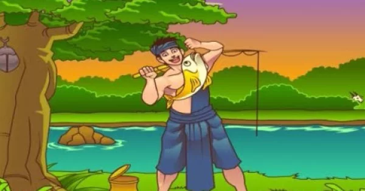

Kisah ini menceritakan tentang seorang pemuda yang bernama Toba yang hidup sederhana dengan bekerja di ladang setiap harinya.

Pada suatu hari, Toba pergi memancing ikan di sebuah sungai.
Dari hasil memancing tersebut, toba mendapatkan sebuah ikan yang memiliki warna kekuningan keemasan.
Saat Toba melepaskan mata kail dari mulut ikan tersebut, ikan tersebut berubah menjadi seorang wanita yang cantik.
Wanita tersebut kemudian memperkenalkan dirinya, wanita cantik tersebut bernama Putri.
Toba sangat jatuh cinta pada Putri, dan memintanya untuk menikah.
Putri kemudian menerima lamaran dari Toba, tapi dengan satu syarat.
Syarat tersebut adalah Toba tidak boleh menceritakan kepada siapapun bahwa dirinya adalah ikan di sungai tersebut.
Toba kemudian menyanggupi permintaan tersebut.
Setelah menikah, hidup secara sederhana dan penuh kebahagiaan, Toba dan Putri dikaruniakan seorang anak laki-laki yang kemudian diberikan nama Samosir.
Seiring berjalannya waktu, Samosir ternyata tumbuh menjadi pribadi yang pemalas dan cukup nakal.
Samosir sehari-harinya hanya bermalas-malasan saja, selain itu Samosir juga memiliki nafsu makan yang tinggi.
Suatu ketika, Putri meminta Samosir untuk mengantarkan makanan ke ayahnya.
Karena malas, Samosir merasa terpaksa melakukan hal tersebut.
Ditengah perjalanan, Samosir merasa sangat lapar.
Karena merasa sangat lapar, Samosir memakan makanan yang seharusnya diberikan pada ayahnya, Toba.
Samosir kemudian hanya menyisakan sedikit dari makanan yang seharusnya diberikan kepada ayahnya.
Setibanya di ladang, Toba sangat kesal dan marah karena melihat makanannya yang hanya tersisa sedikit.
Dengan emosi marah tersebut, Toba membentak Samosir dan berkata “Anak tidak tau diuntung, dasar kau, anak keturunan ikan!”.
Samosir yang sangat ketakutan dan sedih tersebut pulang dan menceritakan apa yang terjadi kepada ibunya.
Ibunya yang mendengar cerita tersebut merasa sangat sedih, karena ternyata Toba telah melanggar janjinya.
Putri dan Samosir kemudian berpegangan tangan, dan keduanya pun menghilang secara tiba-tiba.
Selain itu juga, dari setiap jejak langkah Samosir terus muncul air dalam jumlah yang sangat banyak sehingga menenggelamkan wilayah di sekitarnya termasuk Toba.